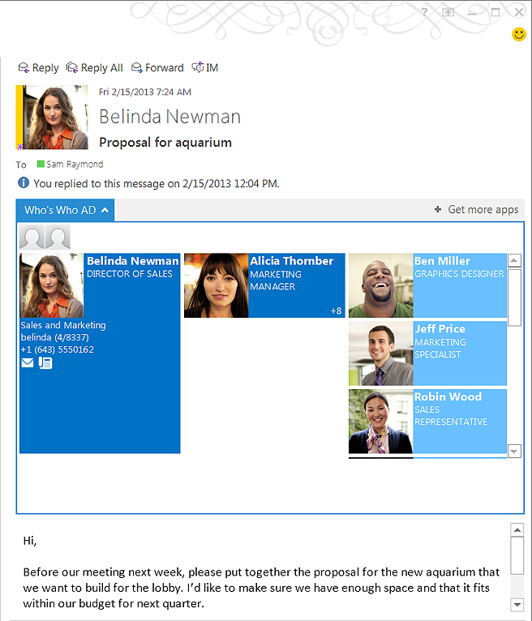
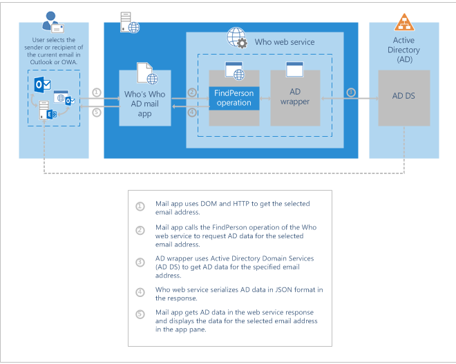
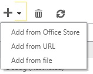
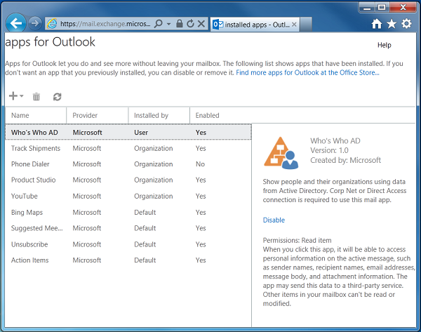
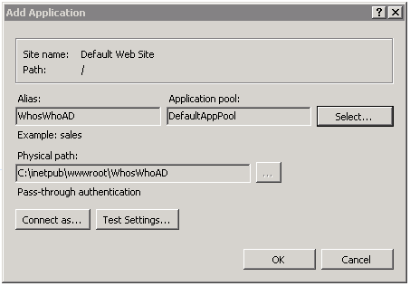

Description of the Who's Who AD mail app sample
This sample accompanies the topic How to: Create a mail app to display hierarchy information from Active Directory in the MSDN Library.
When you select an email message in Outlook or Outlook Web App, you can choose the Who's Who AD mail app to display Active Directory information about the sender and other recipients of an email message currently selected in Outlookor Outlook Web App. The mail app appears in the app bar when you are viewing an email in the Reading Pane or in the mail explorer.
When you first choose this mail app, it retrieves and displays the sender's detailed professional and hierarchical information from Active Directory—name, job title, department, alias, office number, telephone number, and a picture thumbnail. If the sender has a manager or direct reports, the mail app displays a similar subset of information for each of them, as well. Figure 1 shows an example of the Who's Who AD app. The screen shot displays information for Belinda Newman, her manager, and direct reports.

The mail app provides a navigation bar that allows you to choose a recipient and view detailed professional and hierarchy information that is stored in Active Directory.
Behind the scenes, when you select a sender or recipient, the mail app calls a web service, named Who, to get the person's data from Active Directory. The web service includes an Active Directory wrapper, which uses Active Directory Domain Services (AD DS) to access information from Active Directory. After getting the data, the Who web service serializes the data in JSON format and sends it back as the web service response. The mail app then pulls the data and displays it on the app pane. Figure 2 summarizes the relationships among the Outlook user, mail app, Who web service, and Active Directory.

See the accompanying article How to: Create a mail app to display hierarchy information from Active Directory in the MSDN Library for a description of the implementation of the mail app and the Who web service.
| Note |
|---|
|
The Who web service serves only as a prototype and shows a few basic features of Active Directory that are familiar to most Active Directory users. Hopefully this example provides a good starting point for you to extend and support features that are specific to your organization. For more information, see the section Future extension in the accompanying article. |
Prerequisites
To get the most out of this code sample, you should be familiar with web development using HTML and JavaScript, and with Windows Communication Foundation (WCF) web services. You do not need prior knowledge of Active Directory Domain Services.
The following are requirements to install and run any mail app, including the Who's Who AD mail app:
-
The user's mailbox must be on Exchange Server 2013 or a later version.
-
The mail app must run on Outlook 2013 or a later version, or Outlook Web App.
You can use any web development tool that you're familiar with to develop the Who's Who AD mail app.
The following tools were used to develop the Who web service, and deploy the mail app and web service:
-
Visual Studio 2012
-
.NET Framework 4.0
-
Windows Server 2008
-
Internet Information Server (IIS) 7.0
Key components of the sample
The download for this sample consists of the following files and folders:
-
Manifest.xml is the manifest file for the Who's Who AD mail app.
-
WhoMailApp.sln is the Visual Studio solution file for the entire example.
-
The WhoAgave folder contains files for the mail app (including the HTML, images, and CSS files), and some of the files for the Who web service.
-
The ActiveDirectory folder contains files for the Active Directory wrapper.
-
The BuildProcessTemplates folder contains default markup template files for developing WCF web services.
Configure the sample
Use the following steps to obtain the files and modify their references, as appropriate:
-
On a local drive d:, create a folder called WhosWhoAD and download the sample files there.
-
Assuming the IIS web server you intend to host the Who's Who AD mail app is called webserver, create a folder called WhosWhoAD under \\webserver\c$\inetpub\wwwroot\.
-
Copy the img folder and its contents from d:\WhosWhoAD\WhoAgave\ to \\webserver\c$\inetpub\wwwroot\WhosWhoAD\.
The remaining mail app and web service files will be appropriately copied to webserver when you deploy the web service, as described in the section Deploy the web service below.
-
Update the manifest file to reflect the actual location of the mail app HTML file.
The mail app manifest file, manifest.xml, is directly under d:\WhosWhoAD. If your actual web server has a different name than webserver, update manifest.xml to reflect the actual location of the WhoMailApp.html file, by replacing webserver in the following line with the server path of the WhosWhoAD folder you created in Step 2.
XML <SourceLocation DefaultValue="https://webserver/WhosWhoAD/WhoMailApp.html"/>
Installing the mail app
-
In the Outlookrich client, choose File, Manage Apps.
This opens a browser for you to log on to Outlook Web App to go to the Exchange Admin Center (EAC).
-
Log on to your Exchange account.
-
In the EAC, select the drop-down box that is adjacent to the + button, and then choose Add from file, as shown in Figure 3.
Figure 3. Installing a mail app from a file in the Exchange Admin Center
 -
In the add from file dialog box, browse to the location of manifest.xml in d:\WhosWhoAD, choose Open, and then choose Next.
You should then see the Who's Who AD app in the list of apps for Outlook, as shown in Figure 4.
Figure 4. Who's Who AD app installed on the Exchange Admin Center
 -
If Outlook is running, close and reopen Outlook.
| Note |
|---|
|
This procedure is applicable only if your Outlook account is on Exchange Server 2013 or a later version. |
Also, in Step 3, if you do not see Add from file as an option, you need to request that your Exchange administrator provide the necessary permissions for you.
The Exchange administrator can run the following PowerShell cmdlet to assign a single user the necessary permissions. In this example, wendyri is the user's email alias.
New-ManagementRoleAssignment -Role "My Custom Apps" -User "wendyri"
If necessary, the administrator can run the following cmdlet to assign similar permissions for multiple users:
$users = Get-Mailbox *
$users | ForEach-Object { New-ManagementRoleAssignment -Role "My Custom Apps" -User $_.Alias}
For more information about the My Custom Apps role, see My Custom Apps role.
Deploy the web service
Do the following to deploy the Who web service and WhoMailApp.html mail app file:
-
In Visual Studio, open WhoWebService.csproj.
-
Choose Build, Publish WhoWebService.
-
In the Profile tab of the Publish Web dialog box, specify a profile of your choice.
-
In the Connection tab, choose File System as the Publish method.
-
Type \\webserver\c$\inetpub\wwwroot\WhosWhoAD as the Target location.
-
Choose Publish.
-
On the webserver computer, start IIS Manager.
-
In the Connections pane, choose Sites, Default Web Site.
-
Right-click the WhosWhoAD folder, and choose Convert to Application.
-
In the Add Application dialog box, under Application pool with the DefaultAppPool listed by default, choose Select.
-
In the Select Application Pool dialog box, under Properties, ensure that .Net Framework Version: 4.0 or a later version of the .NET Framework is displayed. Choose a different application pool, if necessary, to ensure that the pool uses at least .NET Framework 4.0. Choose OK.
-
In the Add Application dialog box, ensure that you see Pass-through authentication, as shown in Figure 6. Choose OK. Proceed to Step 14.
Figure 5. Add Application dialog box to convert the Who web service as an application in the appropriate application pool on IIS
 -
As an alternative to steps 10 through 12, you can create a new application pool that uses .NET Framework 4.0 (or a later version) and pass-through authentication. Select that application pool and proceed to Step 14.
-
In the middle pane of the IIS Manager, choose Authentication. Verify that Windows Authentication is enabled; right-click to enable it, if necessary.
The deployment procedure copies the following files to \\webserver\c$\inetpub\wwwroot\WhosWhoAD\:
-
bin\ActiveDirectoryWrapper.dll
-
bin\WhoWebService.dll
-
css\WhoMailApp.css
-
img\anonymous.jpg
-
img\app_icon.png
-
img\envelop.png
-
img\telephone.png
-
Web.config
-
WhoMailApp.html
-
WhoService.svc
The Who web service can now be accessed on webserver, and you can now use the Who's Who AD mail app in Outlook or Outlook Web App.
Run and test the sample
-
In Outlook, choose an email to read in the Reading Pane.
-
Choose the Who's Who AD mail app from the app bar.
You should be able to see the Active Directory data in the app pane, similar to the example in Figure 1.
Troubleshooting
If the sender or recipient of an email message has an email address of the form <first name>.<last name>@<domain>, the Active Directory wrapper may not be able to search for the appropriate person in Active Directory. Choose a person whose email address is simply of the form <alias>@<domain>.
Because the Who's Who AD mail app is intended to serve as a prototype, there is room for you to customize the mail app to fit the requirements of your organization. See the Future extension section in the accompanying article for more information.